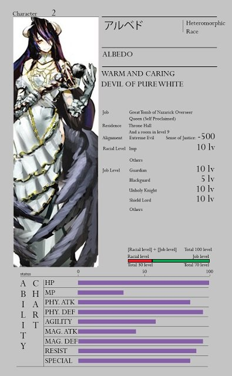
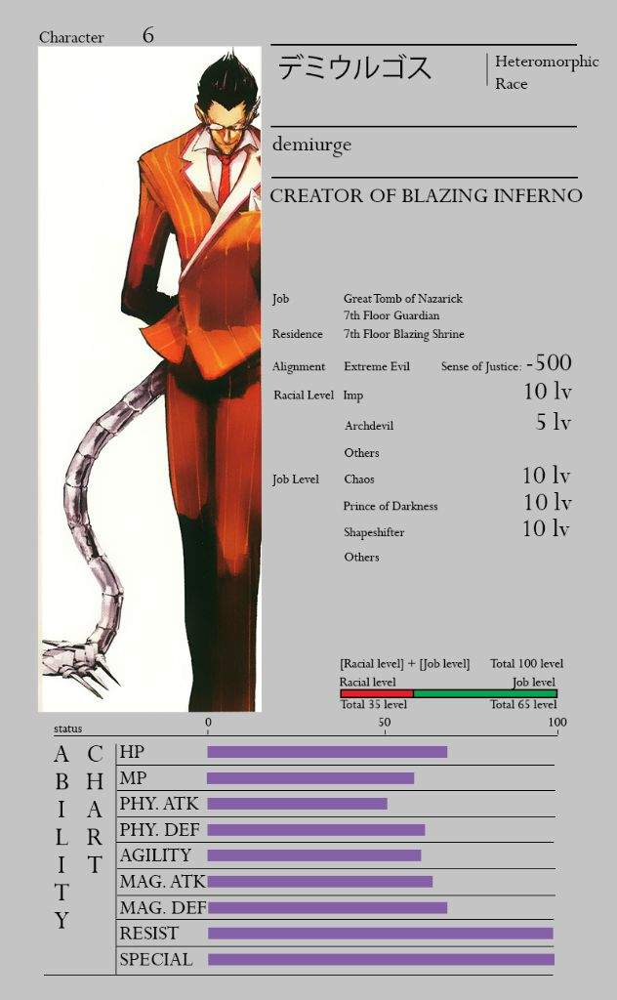

Characters
Ainz Ooal Gown

Ainz Ooal Gown (アインズ・ウール・ゴウン), formerly known as Momonga (モモンガ), is the main protagonist of the Overlord series.
He is the guildmaster of Ainz Ooal Gown, Overlord of the Great Tomb of Nazarick, and the creator of Pandora's Actor.
He is regarded as the highest of the Almighty Forty-One Supreme Beings by the NPCs of Nazarick.In the New World, he is the Sorcerer King of the Sorcerer Kingdom .
His other identity is famously known as "Momon," a dark warrior and leader of Darkness, an adamantite ranked adventurer group of that nation.
He is an adamantite class adventurer and the strongest adventurer known in E-Rantel.Ainz Ooal Gown has the appearance of an Overlord, an undead skeleton creature who is devoid of skin and flesh.
He tends to mainly wear an elaborate, jet-black academic gown adorned with golden and violet edges.
He also has a dark red orb floating under his ribs.
Main weapon:
Staff of Ainz Ooal Gown
Albedo

Albedo (アルベド) is the Overseer of the Guardians of the Great Tomb of Nazarick.
She is in charge of the general management and supervision of the activities done by the seven Floor Guardians, meaning that she ranks above the other NPCs in Nazarick.
She is the middle sister of the older sister Nigredo and younger sister Rubedo. Along with her sisters, she was created by Tabula Smaragdina.
An impeccable beauty, Albedo is a woman with lustrous jet-black hair and the face of a goddess.
She has golden irises and vertically split pupils; on her left and right temples are two thick horns protruding crookedly, and on her waist are a pair of black angel wings.
Albedo wears a pure white dress with silky gloves covering her slender hands and a golden spiderweb necklace that covers her shoulders and chest.
In combat, she wears an impressive black full plate armor with an unique helmet and carries a battle-axe with her to exeute foes.
Main weapon:
3F
{kind=link}
Demiurge

Demiurge (デミウルゴス) is the Floor Guardian of the 7th Floor of the Great Tomb of Nazarick,the Commander of the NPC defenses and the 2nd in command of the Floor Guardians.
He is the creation of Ulbert Alain Odle.
In the New World, under the guise known as Jaldabaoth, a powerful Demon Emperor, he led his demon army to and started a battle in the Royal
Capital of the Re-Estize Kingdom and also led the demi-human coalition in an assault on the Roble Holy Kingdom.
About 1.8 meters tall, Demiurge is described to be a demon with dark skin and nicely combed black hair. Behind the round glasses are eyes so squinted that they are not normally visible.
Wearing a British suit with a tie. Behind his back is a silver tail, covered with metal plates and six long spikes at the end.
In his humanoid form, Demiurge's pair of eyes lack eyeballs, in fact, shining jewels with numerous small cuts take the place of his eyeballs.
Main weapon: Armageddon Evil
Shalltear

Shalltear Bloodfallen (シャルティア・ブラッドフォールン) is a true vampire and the Floor Guardian of the first to third floors in the Great Tomb of Nazarick.
She was created by Peroroncino.
Shalltear is a vampire of short stature and has the appearance of a buxom fourteen-year-old girl. Described as a true beauty, she has pale shiny skin, seductive crimson-red eyes, and fine facial features.
Shalltear's silver hair is tied in a ponytail through a large ribbon on top of it all, allowing others a full view of her face.
Shalltear wears a soft black evening dress with a big heavy skirt. Her upper body is dressed in a lace embellished ribbon and a short tailored jacket.
Her hands are donned with long lace gloves, not exposing any bit of skin exterior.
However, her breasts are fake and are completely flat, similar to a boy's. She covers this up by using an excessive amount of breast pads.
Main weapon:
Spuit Lance
Mare Bello Fiore

Mare Bello Fiore (マーレ・ベロ・フィオーレ) is a dark elf and one of the twin Floor Guardians on the 6th Floor of the Great Tomb of Nazarick.
Mare is the younger twin brother of Aura Bella Fiora. Alongside his sister, he was created by Bukubukuchagama.Mare is a child with dark skin and pointed ears,
a signature trait of the dark elves. He has golden hair and heterochromia, his right eye is blue and his left eye is green.
He wears a blue dragon scale leather full-body suit, covered by a white and gold vest embroidered with the sigil of Ainz Ooal Gown and a forest green-leaf cloak. Below,
he has a matching short white skirt exposing his thighs, and on his neck is an acorn necklace emitting silver light. His slender hands are donned with shiny white silk gloves and he wields a twisted black wooden staff.
People outside of Nazarick besides Hilma always mistake him for a girl, due to how he looks appearance-wise and the clothing he mainly wears.
Main weapon:
Shadow of Yggdrasil
Cocytus

Cocytus (コキュートス) is a Floor Guardian of the 5th Floor in the Great Tomb of Nazarick. He is the creation of Warrior Takemikazuchi.
Having an enormous body size of 2.5 meters, Cocytus has the appearance of an insect walking on two feet - a fusion between a mantis and an ant.
With a tail twice as long as his height, Cocytus is covered in sharp spikes like icicles and has a strong jaw that can easily snap people's hands.
Two of his hands hold a silver halberd, while the remaining two hands hold a mace emitting black light and a crooked shape sheath which seems to be for a broadsword.
With a breathtaking cold air, the pale blue, hardened bone armor oozes out diamond dust like bright light. His shoulders and back look like uplifted icebergs.
Cocytus has a warrior personality, respecting anyone with a fighting spirit, and the heart of a warrior. As a Floor Guardian, he is in charge of Nazarick's martial defense.
Cocytus is loyal to a fault that he even allows his master to fight the rebel Shalltear alone as the former was ordered to do.
This is shown when he prevented Demiurge, under Ainz's order, from interfering in Ainz's fight against Shalltear, even though he too also feared the possibility of losing his master.
Main weapon:
God Slaying Emperor Blade
Sebas Tian

Sebas Tian (セバス・チャン) is the head butler of the Great Tomb of Nazarick with several manservants and other butlers under his command.
He was created by Touch Me. He is also the leader of the Pleiades Six Stars.
Although he is not one of the Floor Guardians, his power closely rivals theirs.
In a way, he is independent of their chain of command. He originally served as Nazarick's last line of defense alongside the Pleiades on the 9th Floor,
to give time for the guild, Ainz Ooal Gown, to prepare for their final stand in the Throne Room.
n his human form, Sebas Tian has the appearance of an elderly butler and he is dressed gracefully in his traditional black uniform. Sebas' hair is entirely white, just like his immaculate beard.
He has visible wrinkles on his hollow face, which makes him seem gentle in appearance, but his eyes are as sharp as an eagle's.
However, in the manga, his beard is longer, his shoulders are not as broad